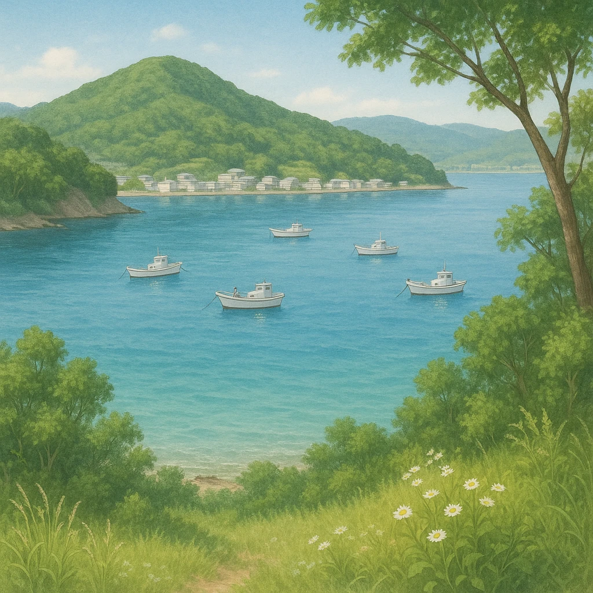

ノート3
公害 ／ 熊本県・八代海ぞい
水俣市
── 工業の発展が生んだ公害
⑦
水俣市は
化学工業
が盛んだった
工場の排水が海に流された
⑧
四大公害病の1つ、
水俣病
が発生した
手足がしびれ、目や耳にも障害が出る重い病気
原因
原因物質は
メチル水銀
魚をとおして人の体に入った（有機水銀ともいう）
化学工場の排水
原因の物質
海の魚に蓄積
人が魚を食べる
⑧の公害病
工場 → 海 → 魚 → 人 という順番が問われる
四大公害病（ならべて確認）
①（熊本県・八代海）
新潟の同じ病気（新潟県・阿賀野川）
四日市ぜんそく（三重県）
イタイイタイ病（富山県・神通川）

第13章 九州地方
SEED EDUCATION